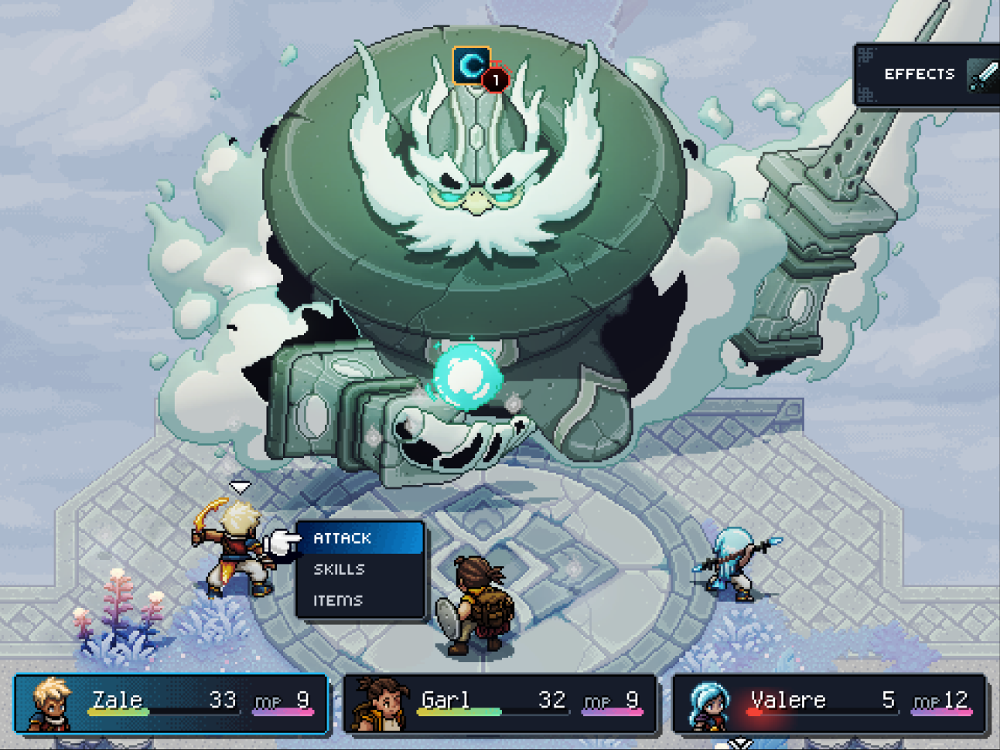
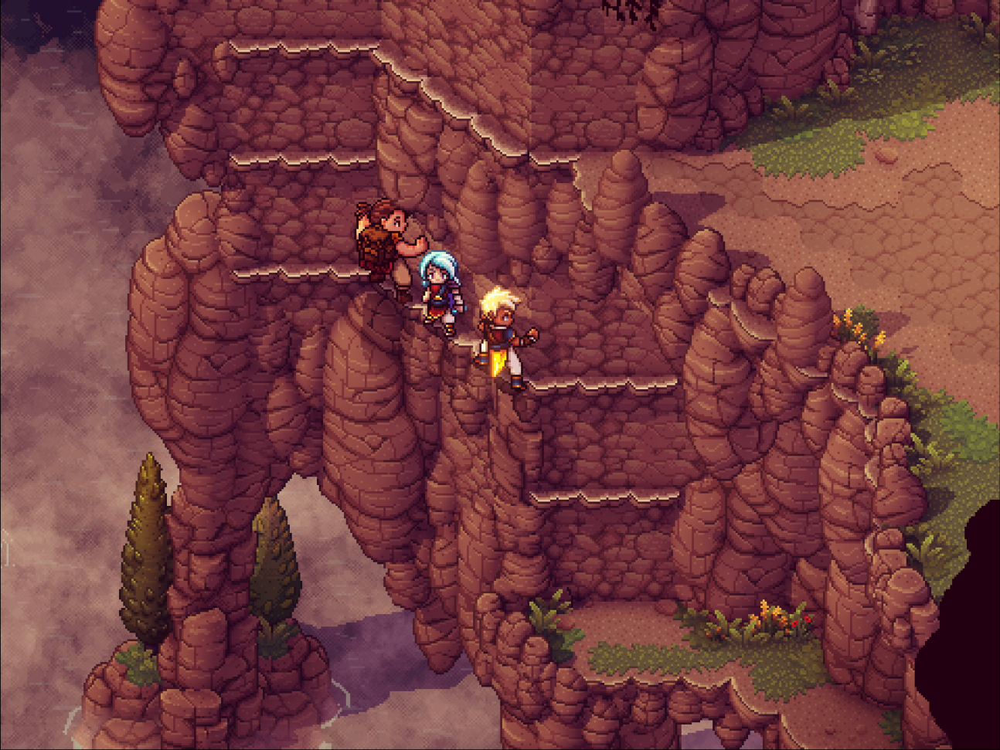
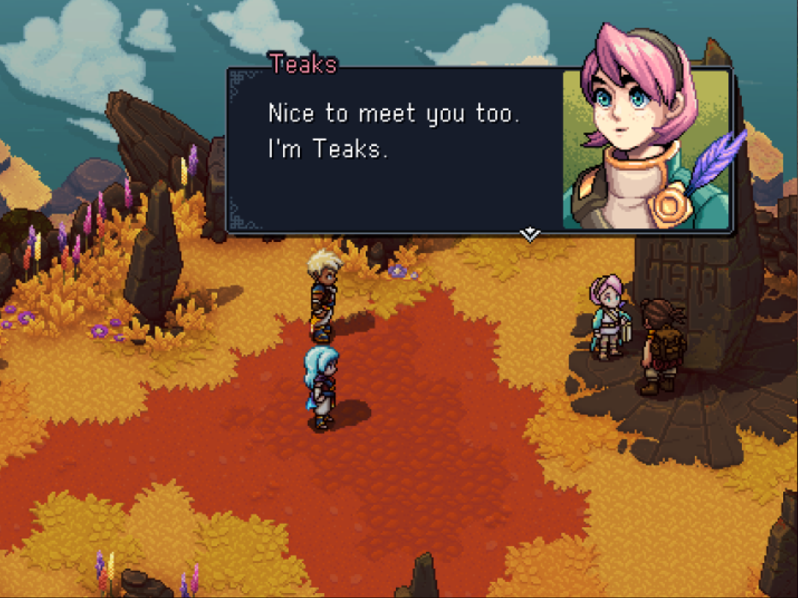
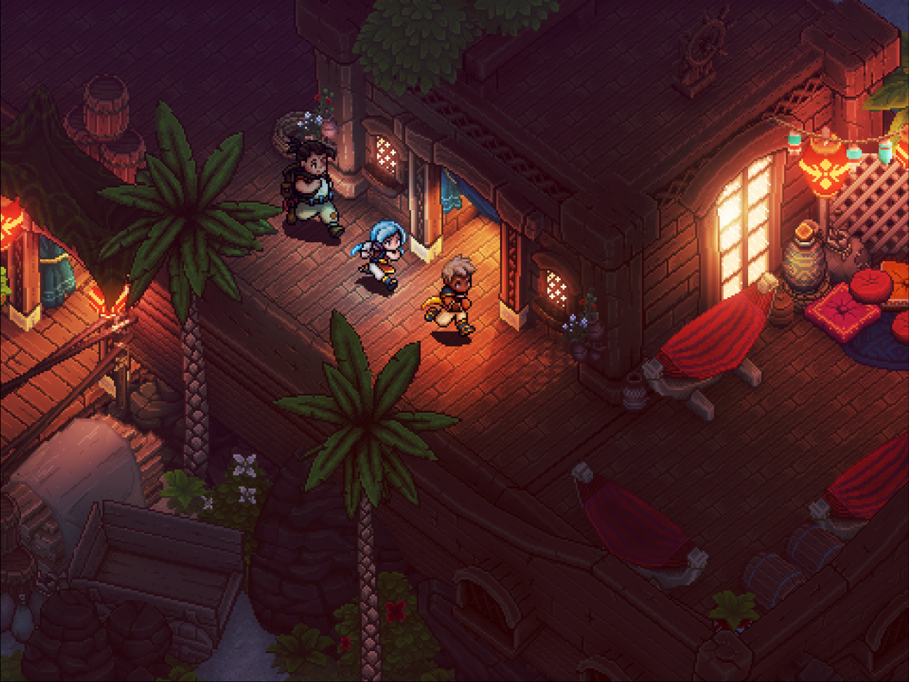

Engaging Turn-Based Combat
Pressing the action button in sync with the
animations increases damage output while
reducing incoming damage. Along with timed hits,
combat features multi-character combo attacks,
boosting, and a strategic « locks » system
offering options to play with different damage
types in order to hinder enemies while they are
channeling powerful attacks or spells, all in an
immersive take on the genre; no random
encounters, no transitions to separate
battlefields, and no grinding.
Unshackled Traversal
Swim, climb, vault, jump off or hoist up ledges
as you traverse seamlessly through the world
with a navigation system based on platformer
expertise that breaks free from the classic
bound-to-the-grid tileset movement.


A story rich adventure
Dozens of original characters and story arcs
will take you on a captivating journey.
Sometimes epic, sometimes silly, and other times
emotional, Sea of Stars does its RPG duty of
exploring classic themes of adventure and
friendship, while also being chock-full of the
unexpected twists and events you’d expect from a
Sabotage production.
A world you can touch
There are many ways to hang out in the world of
Sea of Stars if you feel the need for a change
of pace in your adventures. Sailing, cooking,
fishing, stopping by a tavern to listen to a
song or play the infamous tabletop game known as
« Wheels »…..every system has been designed to
deliver an experience that pays respect to retro
classics, while rethinking in some areas to
offer a smooth and modernized experience
